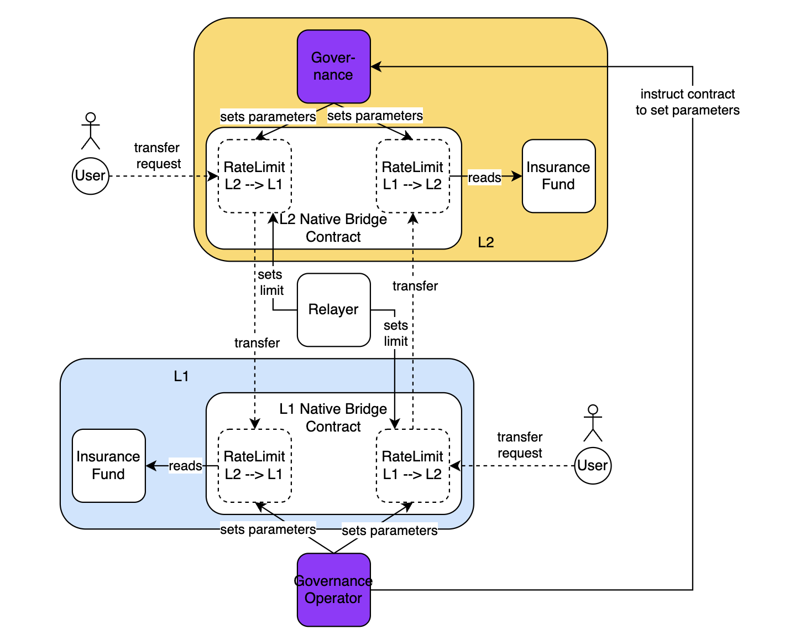

MIP-88: Simplified Rate Limiter for the Lock/Mint Bridge
- Description: A simplified design for the rate limiter of the Lock/Mint bridge.
- Authors: Andreas Penzkofer, Primata
- Desiderata: MD-74
Abstract
The design in MIP-74 considers that the insurance fund differs between the L1 and the L2. This MIP proposes a simplified design where the Insurance Fund is guaranteed to be the same on both sides.
Motivation
In the design in MIP-74 the rate limit is determined by the Insurance Fund on the target chain. The Governance Operator must ensure that the rate limit on the source chains is also set correctly. This means the Governance Operator is already active on both chain.
Moreover, we may assume that the inflow to and outflow from \ tokens is the same on average.
Specification
The key words “MUST”, “MUST NOT”, “REQUIRED”, “SHALL”, “SHALL NOT”, “SHOULD”, “SHOULD NOT”, “RECOMMENDED”, “NOT RECOMMENDED”, “MAY”, and “OPTIONAL” in this document are to be interpreted as described in RFC 2119 and RFC 8174.
Symmetric Insurance Fund
There are two Insurance Funds, one on the L1 (L1InsuranceFund) and one on the L2 (L2InsuranceFund). In this simplified design L1InsuranceFund MUST hold the same balance as L2InsuranceFund, i.e.
Value (L1InsuranceFund) = Value (L2InsuranceFund) = InsuranceFundValueOnChain
Due to the symmetry the rate limit on the source chain can be determined by the same equation as on the target chain. This has the advantage, that the Governance Operator does not have to set the rate limit on the source chain, as requested in MIP-74.
 Figure 1: Architecture of the Rate Limitation system with symmetric Insurance Fund
We define
- inbound as the direction for which funds are released / minted. I.e., the considered chain is a target chain for the given direction.
- outbound as the direction for which funds are locked / burned. I.e., the considered chain is a source chain for the given direction.
The Insurance Fund on a given chain thus MUST be used to
- one half for the rate limit for incoming direction
- one half for the rate limit for outgoing direction
Moreover, if we register the budget on a daily basis, for security reasons, we MUST only utilize one half of each direction’s Insurance fund budget per day. However, since the same Insurance Fund value exists on either side, we add up the allocated values from L1InsuranceFund and L2InsuranceFund for a given direction. Concretely this leads to the rate limits being
Trusted Governance Operator informs about Insurance Fund Value
This section extends the ideas of the previous section.
We can simplify our approach even further based on the trust assumptions on the Governance Operator. Since we trust the Governance Operator to allocate symmetrically funds to the insurance fund L1InsuranceFund and L2InsuranceFund, we MAY go a step further and also trust the Governance Operator to report honestly and timely about the balance on the Insurance Fund.
Figure 2: Architecture of the Rate Limitation system with Insurance Fund only on one Layer
Let there be an Insurance Fund on the L2 (L2InsuranceFund) with token amount of value InsuranceFundValueOnChain. The Governance Operator MUST provide the value InsuranceFundValueOnChain to the Rate Limitation contract on L1 in a timely manner and reliably. Similar to the previous section, if we register the budget on a daily basis, for security reasons, we MUST only utilize one half of each direction’s Insurance fund budget per day.
Since compared to the previous solution the funds are only held on one chain the rate limitation is now calculated as follows:
Reference Implementation
Verification
Appendix
Copyright
Copyright and related rights waived via CC0.